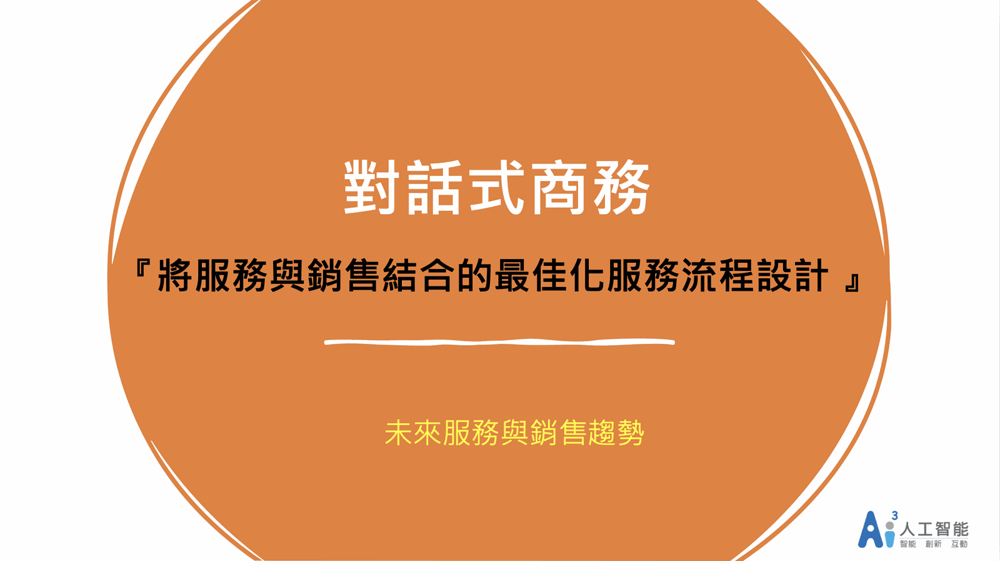
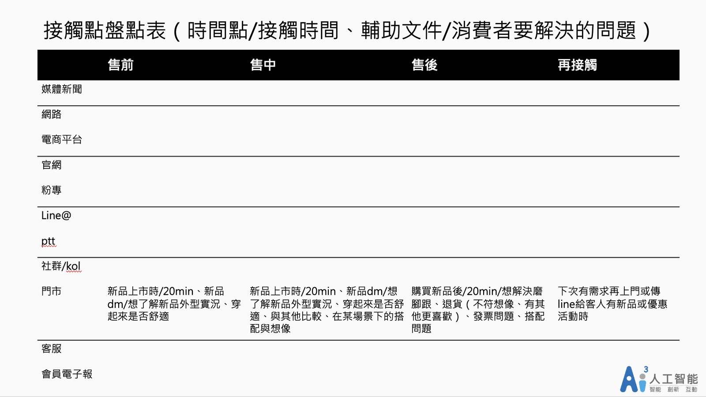
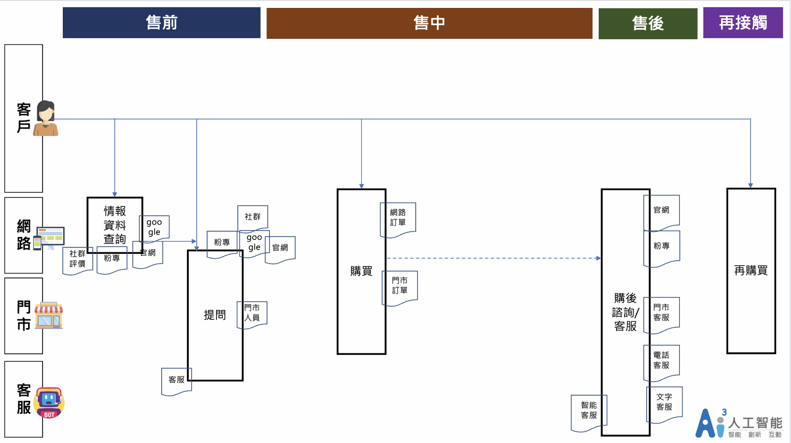
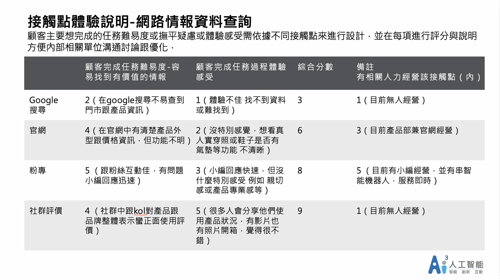
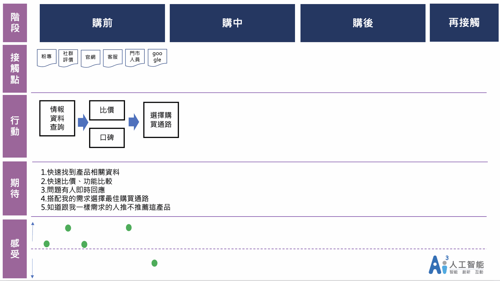

對話式商務服務與銷售流程整合的最佳化服務設計該怎麼做？
服務流程圖、體驗設計、工具如何結合在流程中、怎麼評估成效，讓全方位客服解決方案專家Ai3人工智能一次告訴你。
服務流程（英文Service Process）在企業當中是非常重要的關鍵流程，它表示你如何接觸顧客、提供給顧客什麼樣的服務感受、顧客怎麼接觸產品與服務、你如何獲取顧客資訊未來在做下一步行銷．我們在協助客戶解決問題時，在需求討論中常會聽到“可是，我們這個舊crm系統用很久了，綁了很多有的沒的，要調整資訊會覺得很麻煩”、“以前客服人員不用做這些，她們會抗拒”、“為了cover其他單位需求，我們在流程中再加上幾個步驟好了”、“我們導入智能客服就是想解決客服人力成本增加問題”….，在相關討論中，很多的對話在於內部省麻煩、省成本、省掉習慣改變，但不是聚焦在如何提供給客戶最佳服務與銷售體驗為思考出發點，而要做「服務與銷售流程整合的最佳化服務流程設計」這件事是要從提供給客戶最佳化先思考→再思考效率與成本→最後思考內部的習慣轉換。
對話式商務服務設計-服務流程
上一篇 對話式商務是什麼？企業服務、行銷、導購策略的全新服務設計思考有提到服務流程要盤點現況的接觸點，可以透過這幾個表格來進行整理．服務設計舉例我們今天是一個賣鞋子產品的品牌，全台也有門市來進行服務設計範例說明。

接觸點盤點表：將每個通路、售前中後的接觸點中 時間點/接觸時間、輔助文件/消費者要解決的問題 進行盤點整理。示意圖片

服務設計範例(繪製服務流程圖)：將服務過程繪製成流程圖，包含事件、資訊等，來審視在 動線、再接觸循環、更好的服務體驗設計的可優化部分．可參考上一篇對話式商務是什麼？企業服務、行銷、導購策略的全新服務設計思考的思考點
對話式商務服務流程設計-體驗設計(客戶最佳化先思考、效率與成本)
透過上述流程檢視顧客體驗，可以透過顧客樣本來一起協助檢視，許多公司喜歡找自己內部員工來思考常常是不那麼準確的。

服務設計範例(接觸點體驗)：上述賣鞋品牌案例來進行範例說明，從網路查詢情報的接觸點來看，我們對該項目進行評分與說明

繪製完整使用者旅程：這個部分是我們內部使用的簡化版使用者旅程，提供大家參考，但情緒感受那塊 可以用時間軸「就是消費者每個階段的感受」也可以先進行每個接觸點的情緒感受標記，若你要完整一點，應該要把每條可能的接觸點時間軸繪製出，所以光是情報搜集過程，可能就有5-10條的流程跟感受點需要繪製。
對話式商務-工具如何結合在流程中的思考點(客戶最佳化先思考、效率與成本)
1.哪些點顧客的行為已經改變 例如轉為chatbot方式互動？
傳訊息這個行為已是現在大眾習慣，而運用這個模式是未來對話式商務的基礎與趨勢，大家在上班時間跟你的消費品牌接觸，在電腦大喇喇的看官網還是手機透過機器人對話看比較方便？打給客服或門市詢問方便還是使用chatbot？客戶的行為已經改變，我們在哪些接觸點設計智能客服機器人是可以讓顧客覺得更方便、更即時的？未來透過智能客服入口完成一切，對客戶來說比下載app更方便。
2.哪些點有機會整合銷售機會？工具？
整個流程接觸點中，哪些可以結合銷售？哪些可以提升服務效率？哪些可以更有效解決客戶問題但又兼顧內部效率提升？哪些服務設計可以讓客戶再購或再主動接觸產品、我們。
上述這些有哪些工具可以幫助我們？可服務亦可推播的智能客服？一個被重新整合的CRM系統？多通路客服與行銷工具。
3.重複的問題如何提供更有效率的服務？我要提供哪種形式的服務？工具？
自然語意的智能客服或知識管理工具或不同形式的服務。
4.客戶對於調整的流程會感覺如何？調整流程跟調整工具運用？
更有效解決客戶在該階段想完成的任務？體驗感受如何？是否有驚艷點？有客戶與服務流程專家共同參與調整？內部有不斷優化的流程？相關配套的經營人員配置。
5.如何更好的運用工具？工具的整合與銷售成效間的關係？
我是否清楚工具的功能與整合性，工具在不同接觸點發揮的對客戶跟對內部的價值是什麼？這些工具如何促動顧客銷售？人與智能工具如何相輔相成。
以上都是十分重要的思考，當流程繪製出來，搭配的工具設置在接觸點，會有許多上述問題必須來回思考，你才能透過這個過程設計出將服務與銷售結合的最佳化服務流程設計。
對話式商務服務流程設計-怎麼評估成效
這段未來會結合如何做數據分析來進行分享，但從各個通路的顧客使用、設計轉換率、再購率、滿意度調查等等，都可以看出新的整合流程對顧客的價值以及促進再接觸與對話式商務（對話式行銷）的成效，但一個新的整合流程要發揮價值需要不斷優化推動，才能讓它滾動循環。
對話式商務/對話式行銷(Conversational Commerce)是一個很好的服務策略，在企業內如何步驟式導入、要如何設計、搭配什麼工具(例如聊天機器人、CRM、電話客服、文字客服等等)、如何提升銷售成效、大數據分析等等，都將在其他篇章與大家分享。
Ai3人工智能，你全方位客服與銷售解決方案夥伴
觀看更多文章